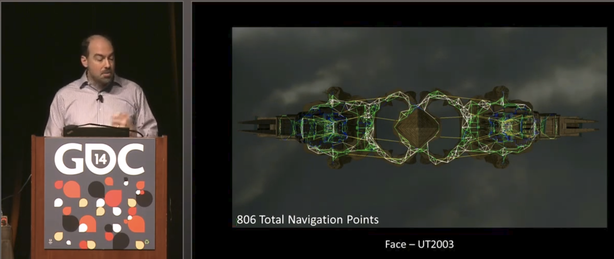
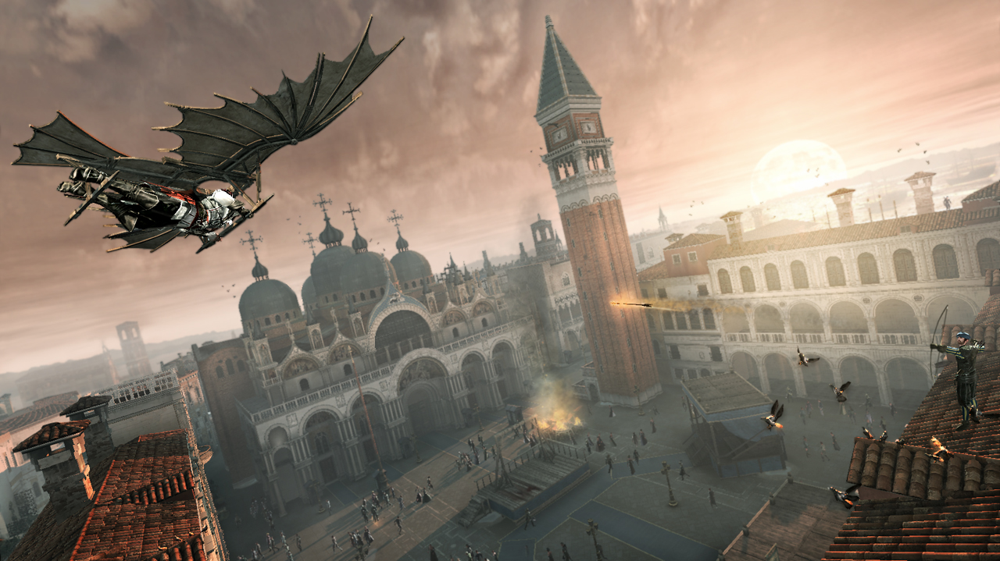
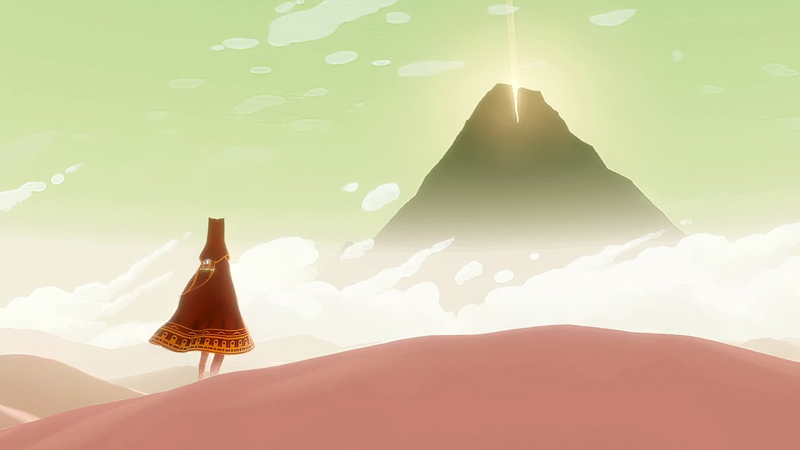

Today’s agenda — Discussion (the Explore/Exploit reading), Unity Review, Ideation & Design (group brainwriting toward the Lost Woods project).
This session opens with a Unity Essentials refresher carried over from CTIN 289, introduces tools for directing player attention, runs a group brainwriting exercise on the concept of “being lost,” sets up Perforce for the semester, and closes with a discussion of the Explore/Exploit chapter from Algorithms to Live By — all leading toward the Lost Woods project assignment due Thursday.
Today’s Agenda
Discussion — Ideation & Design. We’ll talk about the reading and discuss the Explore/Exploit tension.
Unity Review — Let’s do some group brainstorming and talk about making decisions. We’ll go over some essentials you’ll remember from CTIN 289, as well as some 3D-specific topics.
Review of Unity Essentials
Models, materials, lights, etc.
Let’s open up Unity! Download the Essentials assets from the Google Drive.
Unity Version: 6000.0.14f1
Render Pipelines — what are they?
A render pipeline is a package of rendering features built into the runtime.
A pipeline will support certain features (raytracing, LOD, Shader Graph, etc.) and not others. It offers differing levels of platform support, rendering quality, etc.
Render Pipelines — why?
All those extra features must be built into the runtime (the Unity DLL that travels with your build).
The more features, the bigger the build size that your player has to download. Some features can be stripped out at compile time, but not all.
The rendering process will take more CPU and GPU resources to run on your player’s machine. This limits what devices you can target, requires more optimization on your part, and often leads to player complaints if they aren’t using a high-spec machine.
Render Pipelines — the three options
Unity has three common render pipelines:
- the built-in option
- Universal Rendering Pipeline (URP)
- High-Definition Rendering Pipeline (HDRP)
I recommend that you default to URP unless you have a compelling reason to use HDRP.
Universal Render Pipeline (URP) is suitable for all platforms, including mobile, but it doesn’t include certain high-end features like ray tracing and volumetric lighting.
Built-in Pipeline is still supported, but Unity has said they will remove it in the future. It doesn’t offer many benefits over the other options. If you set up your project with the built-in option, you can add another rendering pipeline later, but it’s a pain.
High-Definition Rendering Pipeline (HDRP) does include all the high-end features, but requires a high-powered computer or modern console to run, as well as assets that look good at high resolution.
Importing 3D Models
Models will usually be FBX files that you download from the Unity Asset Store, find online, or export from Maya or Blender.
FBX files usually contain model, material, and texture information. Sometimes they can also contain animations.
If your model shows up as bright pink, it means something is wrong with the material that’s applied to it. You should check the material, texture, and shader for issues.
Manipulating Materials
Materials contain lots of information that determines how an object shows up on screen. The parameters that are available to you are determined by the shader that the material is using, but some of them are common:
- Color
- Texture (Base Map)
- Smoothness
- Metallic
- Emission
You can copy and modify materials. This is a great way to swap out the texture on a character or object, for example.
Lighting a Scene
There are four types of lights: directional lights, point lights, spot lights, and area lights.
Lights emit light according to their color and intensity. Only “lit” materials will react to lights; “unlit” materials ignore all lighting.
Lights can be controlled by scripts. You can turn them on or off, adjust their color and intensity, or change their direction (for directional and spot lights) and position (for point lights, spot lights, and area lights).
You can control general features of the light in your scene using Lighting Settings (Window → Rendering → Lighting). This will be very useful to you for creating atmosphere and mood in your scene. You can change some of them at runtime using the RenderSettings object.
Here are two short tutorials that will give you a jumpstart in actually using the system:
- Unity Lighting Clinic
- Light Up Your Game
- Exterior Lighting in URP
Playing Audio
Your main camera should have an AudioListener component. To play a sound, you need a GameObject with an AudioSource component.
You can have your audio source be part of another object, in which case you just need to call its Play function in a script. But be careful when you’re destroying an object that might still be emitting audio!
You can instantiate a dedicated audio source and have it play on awake, but if you do that you should make sure it cleans up after itself. You can write a script that will self-destruct once it’s done playing. (That’s a useful one to keep in your cookbook!)
Setting Up a Camera
Align with View. A useful tool for working with cameras is the Align with View command in the GameObject menu.
Every scene comes with a camera already in the hierarchy, but you can add more cameras to your scene. If you do, you should make sure you only have one Main Camera (check the tag on the Camera object) and one Audio Listener.
You can turn cameras on and off using scripts or timelines. It is straightforward to set up split screen, though the logic for supporting gameplay can be more complicated.
Render Textures. You can point a camera at a RenderTexture in order to reflect it in the game world (for example, as a CCTV monitor, a mirror, or a 3D object in the UI).
Creating a Particle System
Unity provides you with a really nice system for creating particle effects using a whole bunch of adjustable options. Particle effects are useful for creating things like sparks, flames, smoke, explosions, sparkles, glows, beams, dust, fog, rain, snow, and sprays.
The best way to get started with particle systems is to find a pre-made effect (for example, on the Asset Store) or a tutorial that does something similar to what you’re looking for, and then go nuts tweaking the values. Once you get used to how particle systems work, you can also create them from scratch using custom textures and behaviors.
Recipe — Falling Leaves
Particle System
- Duration: 5
- Prewarm: Yes
- Start Size: 0.3 to 0.5
- Start Rotation: 1 to 360
- Start Color: Green
- Gravity Modifier: 0.1
- Simulation Space: World
- Simulation Speed: 0.5
- Max Particles: 100
Emission — Rate over Time: 5 Shape — Angle: 60 Force over Lifetime — X: -4 Color over Lifetime — Opacity gradient 1 to 0 in last 20%
Noise
- Separate Axes: Yes
- X: 5, Y: 1.5, Z: 5
- Frequency: 0.1
- Scroll Speed: 1
- Damping: No
- Octaves: 2
Renderer — Leaf material Collision (optional) — Type: Planes; Dampen: 0.5; Bounce: 0; create an empty GameObject at ground level and add it to the Transform list.
Recipe — Sparkle
Particle System
- Duration: 2
- Prewarm: Yes
- Start Lifetime: 1.8
- Start Speed: 0
- Start Size: 0.6 to 3
- Start Rotation: 0 to 360
- Start Color: Random between yellow and white
- Max Particles: 100
Emission — Rate over Time: 20 Shape — Sphere; Radius: 0.01 Color over Lifetime — Opacity gradient 0 to 1 to 0 Rotation over Lifetime — Angular Velocity: -10 to 10 Renderer — Star material
Creating and Instantiating Prefabs
Prefabs are important and offer two distinct advantages.
First, prefabs allow you to create multiple copies of one object, or multiple variations of the same basic object. If you need to make changes to the prefab (by updating the model, adjusting some values, adding a script, or anything else) then all the copies will automatically update as well.
Second, prefabs are stored as separate asset files, which means that it’s much easier for developers to make changes to a scene’s prefabs without causing version control conflicts. When you’re putting together your scene, think about how it makes sense to organize things into prefabs.
Player Attention
How do you get the player to look at something in particular?
Roughly, a viewer’s attention is drawn to the following:
- Movement
- The brightest object
- The most saturated color
- An actor’s eyes
- The object with the most contrast
- Center of frame
Players also pay special attention to:
- Threats
- Interactables
Here is a breakdown of ways to draw and sustain attention, with a focus on web design (Link).
You can see that many elements are shared. On websites you are usually trying to facilitate an interaction, such as buy, learn, contact, find, and so on. The user is usually oriented to websites in general and knows what task they are trying to accomplish.
In games, the verbs are different, and often the player is (intentionally or not) trying to work out what their task is and what the tools are for accomplishing it. This is often a source of the fun! But it can also frustrate. Use the tools carefully to create the arc you want, from feeling lost to feeling found.
Defining Paths
Here is a discussion of creating paths through a level. It is focused on shooter design, but has a lot of useful tips for creating focal points and sightlines, as well as a useful visualization of player paths through a level that helps identify points of choice and bottlenecks (Link).

GDC 2014 talk on navigation point density — Face, UT2003 (806 total navigation points).Weenies — orienting the player with landmarks
Don’t forget that you can also use landmarks to help orient the player! But for the Lost Woods, you don’t want them to be too oriented.
Disney’s Animal Kingdom — Tree of Life.

Assassin’s Creed II — St. Mark’s Campanile, Venice.
Journey — the mountain.Ideation & Design — making your Lost Woods deliberately
Group Ideation — Brainwriting
We’re going to practice a group ideation strategy called brainwriting.
Get into a group of 3–5 with the people around you. Form an approximate circle.
Step 1 — Being Lost. Take 5 minutes to think about the concept of being lost. Here are some prompts:
- What does being lost feel like?
- How can you make a player feel lost?
- What could being lost look like in your Lost Woods project?
Write down some ideas on one side of a notecard. Try to make it legible and sensible — you’re going to give this to someone else to read.
Step 2 — Pass left. Pass your notecard to the person on your left. Read the notes on the card that was just passed to you. Reflect on these ideas. What new ideas do they inspire for you? Flip the card over and write on the back. Keep brainstorming. What else can you come up with?
Step 3 — Finding Your Way. Set that notecard aside and get a new one. Here are some more prompts:
- What does finding your way feel like?
- How can you make a player find their way?
- What could finding your way look like in your Lost Woods project?
Again, write out some notes on one side of your notecard.
Step 4 — Pass right. This time, pass the notecard to the person on your right. Again, read the notes on the card that was just passed to you. Flip the card over and continue brainstorming on the back.
Step 5 — Share. Go around the circle and share what’s written on both of your notecards. Continue brainstorming out loud — but don’t get too far off task. Make sure everyone gets a turn.
Ideation & Design — converging
Ideation is the process of building up ideas. Design is the process of whittling those ideas down again.
Make some decisions. Pick one or two ideas from your brainstorming that seem like they might be effective — or at least interesting. How can you implement them? What do you need to build to try them out?
Keep your scope in mind. You’re going to spend around 6–10 hours on this project. How are you going to spend that time?
Next Time — Review of Perforce
File sharing and version control.
Discussion — Explore / Exploit
Discussion prompts (work down the list):
- What did you think of this chapter?
- Do you think that you have a bias towards exploration?
- Can you identify examples of explore / exploit tensions in games that you’ve played recently? How did you optimize play around these tensions?
- How can you use what you know about explore / exploit to improve your game design?
Assignment
W02-Assignment - Lost Woods Project
Reading
Locked doors, headaches, and intellectual need by Max Kreminski — https://mkremins.github.io/blog/doors-headaches-intellectual-need/
Read by Monday, September 8. We will discuss in class.
This blog post discusses the consequences of improper sequencing on learning and motivation. It describes how “problem-solution ordering issues” have implications in both game design and educational contexts. Max is a USC alum who went on to get a Ph.D. from UC Santa Cruz and now works as a professor at Santa Clara University.
See You Next Time
Turn in your Lost Woods Project on the Google Drive, along with a video showing the gameplay. BRING HEADPHONES ON THURSDAY. We will be playtesting in class!
Related
- W02-Assignment - Lost Woods Project
- Reading - Algorithms to Live By, Chapter 2 - Explore-Exploit (Christian & Griffiths)
- Reading - Locked Doors, Headaches, and Intellectual Need (Kreminski)
- Week 2.1 - Keys and Doors
- Unity Essentials
- Render Pipelines - URP vs HDRP
- Particle Systems
- Player Attention
- Weenies and Landmarks
- Game - Journey
- Game - Assassin’s Creed II